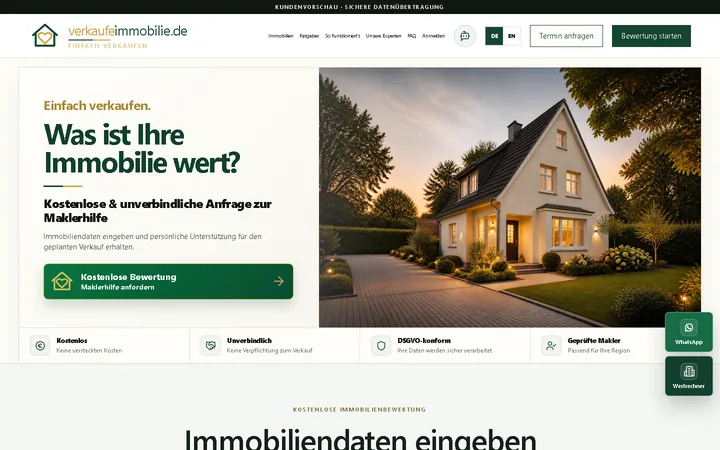
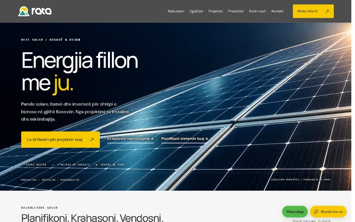
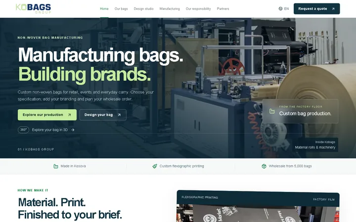

Starter
Mbështetje bazike IT
€99/ muaj
Çfarë përfshihet
- Mbështetje teknike bazike
- Monitorim i gjendjes së sistemeve
- Menaxhim email & domen
- Përditësime dhe mirëmbajtje mujore
- Suport në distancë
- Vizitë kontrolli e planifikuar
WEB / SOFTWARE / AI / IT
Faqe interneti, softuer dhe automatizim me AI. Nga ideja te një zgjidhje që ekipi yt mund ta përdorë.
Prishtina, Kosovo · SQ / EN / DE


DY PIKA NISJEJE
NGA STUDIOJA



Partnerët
IT SUPPORT
Oferta përfundimtare dhe përfshirjet konfirmohen pas analizës së nevojës.
Starter
€99/ muaj
Business
€299/ muaj
Enterprise
€779/ muaj